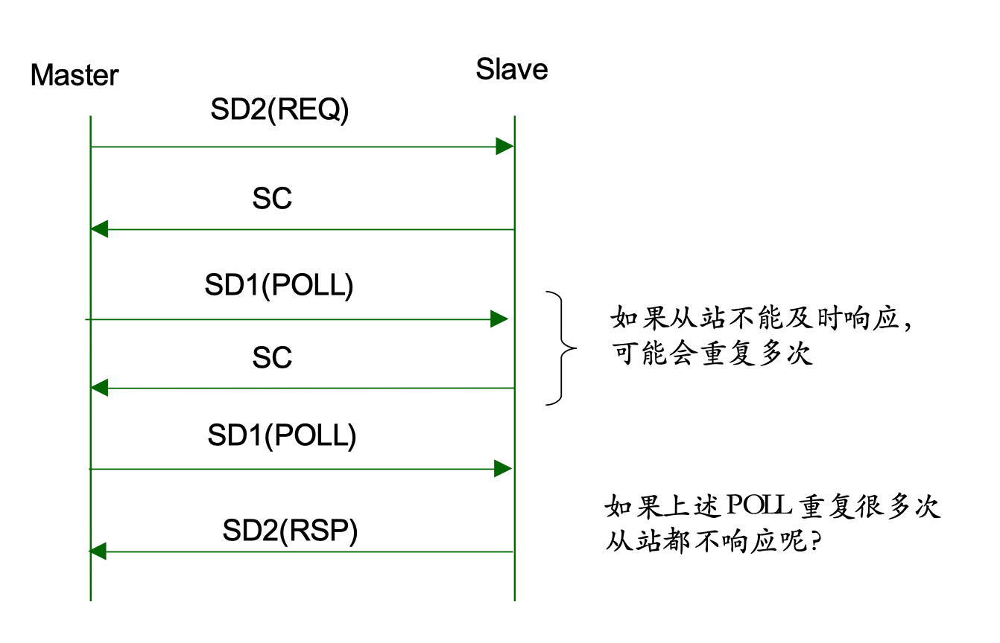

协议实现
Layer 1 物理层
在Linux操作系统上，UART设备被抽象为TTY设备，在/dev/下可以看到ttyS0等便是串口设备，在LInux上使用Termios API对串口进行控制操作，具体见Termios,打开读写操作还是使用正常的open,read,write函数，毕竟Linux的设计哲学就是一切皆文件。
Linux应用层的串口编程示例
打开串口
int fd = open("/dev/ttyS0",O_RDWR );
设置波特率
struct termios attr;
tcgetattr(fd,&attr);
cfsetspeed(&attr,B115200);
tcsetattr(fd, TCSANOW,&attr);
读串口
char buf[1024];
int len = read(fd,buf,1024);
写串口
write(fd,buf,1024);
Linux驱动层的RS-485收发使能控制
因为MPI物理链路上使用RS-485，所以需要对485收发器进行收发控制，具体控制逻辑是串口发送数据时，485 发送使能脚UART_CON拉高，因为对应的接收使能脚是低电平有效，所以此时发送有效。当串口发送数据完毕后，将对应的485 发送使能脚UART_CON拉低，此时发送使能无效，接收使能有效，485收发器处于接收状态。
在驱动层面实现了对485控制器使能脚的逻辑切换，当应用层调用write函数向串口发送数据时，UART的硬件发送中断被打开，并且将485 发送使能脚UART_CON拉高， 驱动的中断函数会去把应用层的数据复制到UART的寄存器，UART根据自己的数字逻辑将FIFO中的数据通以设置好的串口帧格式串行发出，当UART发送完毕时，会再次触发发送中断，这个时候UART 驱动的中断函数判断到应用层的数据已经全部通过串口发送出去后，就会关闭发送中断，然后将对应的485 发送使能脚UART_CON拉低，进入接收状态。
Layer 2 物理链路层
分为PPI 和 MPI 来讨论
PPI
PPI在具体的实现上没有做成多主站模式，而是直接做成一主多从的模式，通过抓包昆仑通泰的PPI通信发现其实现就是一主多从，实际观感上刷新非常快，并且从数据流上看也非常简单直接。
之前提到的MPI通信有以下几个特征:
- MPI 有两种类型的设备：主站和从站
- MPI网络是一个令牌网，只有持有令牌的主站，才允许主动向其他PPI站点发送请求消息
- 从站不能持有令牌，只允许响应来自其他主站的请求
PPI也同样适用，不过因为我们的实现改成了一主多从，所以无需管理令牌，主站可以随时发送请求消息，从站不能主动发送消息，只允许响应来自其他主站的请求。
PPI一主多从的具体通信实例
- 主站，主站号为0
- 从站，从站号为3
建立连接
主站发送SD1消息： 10 03 00 49 4C 16
对应的消息解析：
SD1：消息头（0x10）
DA：目的地址03
SA：源地址00
FC：帧控制49（FDL查询）
FCS：帧校验（DA到FC的数据和）
ED：帧结束（固定：0x16）
从站响应SD1消息： 10 00 03 00 03 16
对应的消息解析：
SD1：消息头（0x10）
DA：目的地址00
SA：源地址03
FC：帧控制00（从站）
FCS：帧校验（DA到FC的数据和）
ED：帧结束（固定：0x16）
数据请求
SD2 REQ ( 00 -> 03 )
68 1B 1B 68 03 00 5C 32 01 00 00 02 AE 00 0E 00 00 04 01 12 0A 10 02 00 14 00 01 84 00 00 00 1C 16
SC ACK (03 -> 00)
E5
POLL (00 -> 03)
10 03 00 5C 5F 16
SD2 ACK (03 -> 00)
68 29 29 68 00 03 08 32 03 00 00 02 AE 00 02 00 18 00 00 04 01 FF 04 00 A0 DB F5 DB F5 DB F5 DB F5 DB F5 DB F5 DB F5 DB F5 DB F5 DB F5 D2 16

具体的PPI 通信细节参考西门子PPI 通信手册， 参考价值极大。
MPI
MPI 设计为多主站多从站的通信模式，在层二主要由令牌管理和数据请求两部分组成
层2的11个状态（覆盖了层2的所有功能）：
层二的状态转移主要如下图所示: